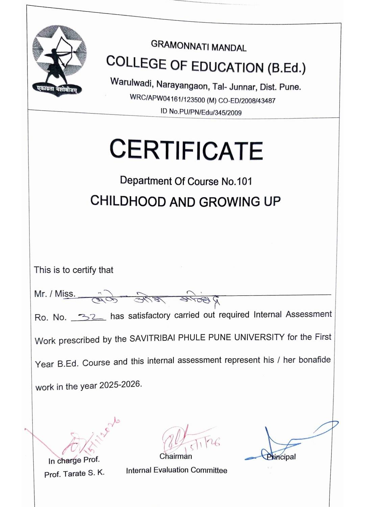
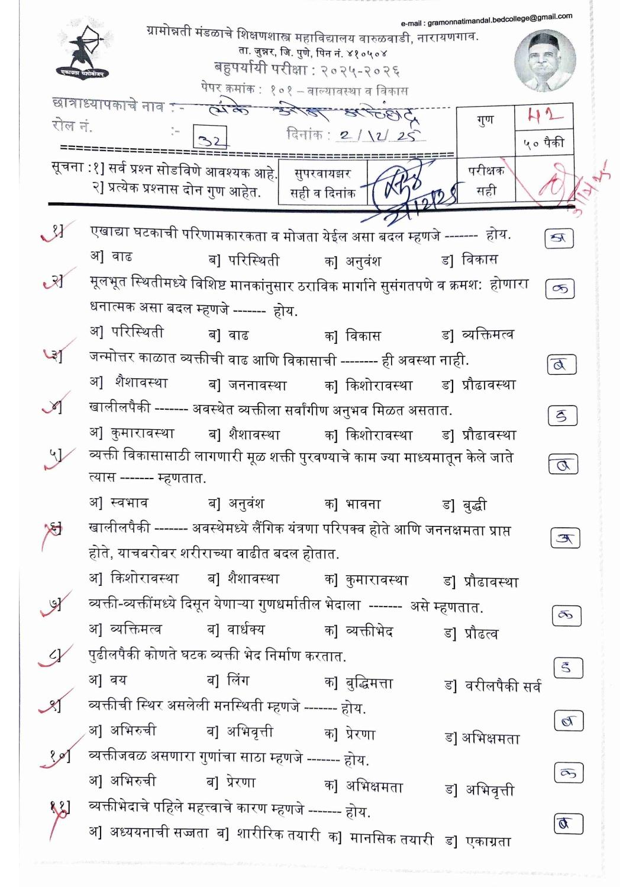
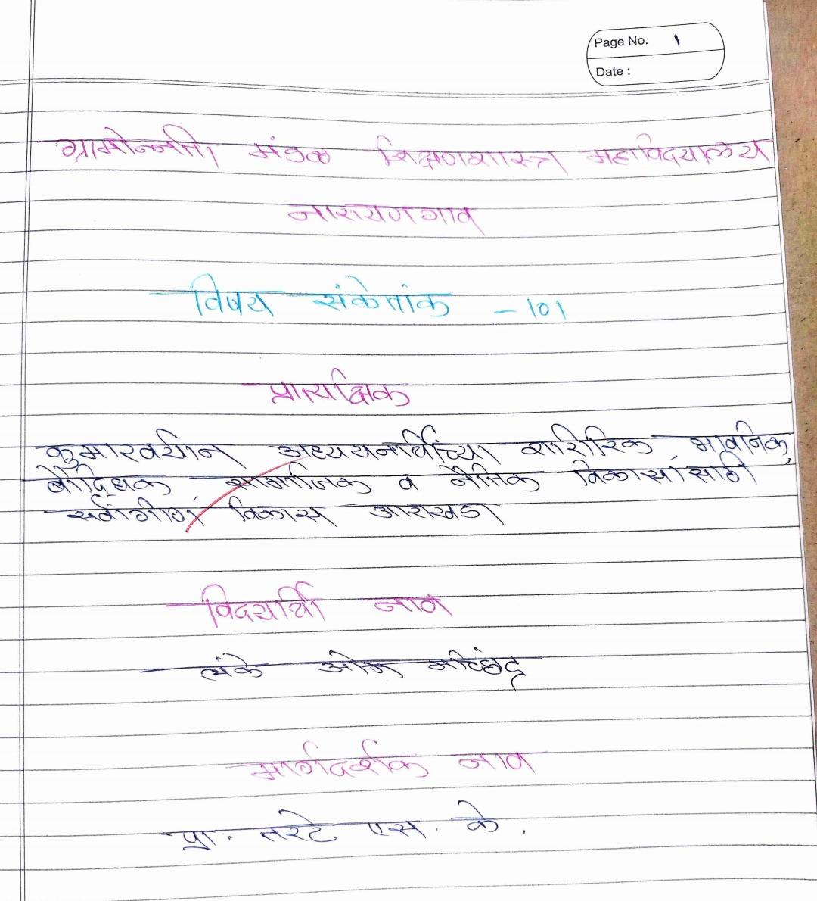
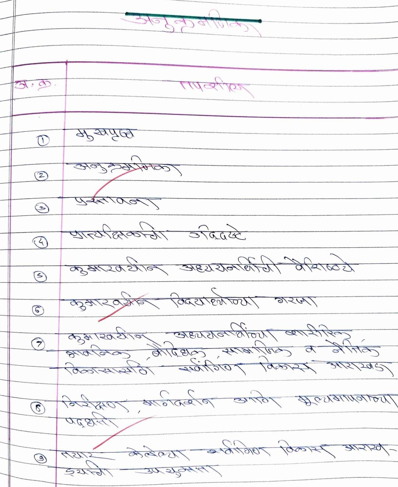
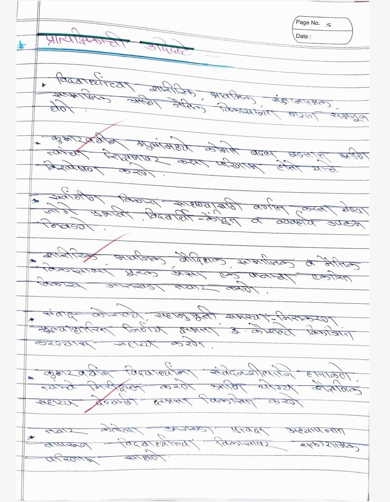
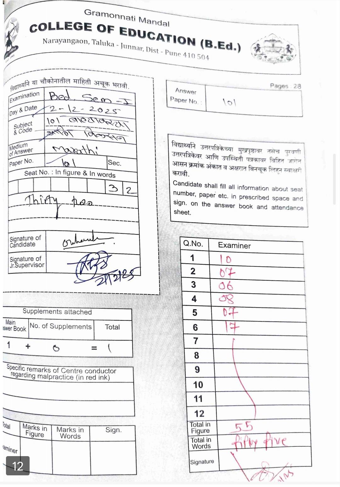

ओम मच्छिंद्र लंके
B.Ed ई-पोर्टफोलिओ
ग्रामोन्नती मंडळ शिक्षणशास्त्र महाविद्यालय, वारुळवाडी, नारायणगाव
सुस्वागतम !!!!!!
माझ्या डिजिटल अध्यापन पोर्टफोलिओमध्ये आपले स्वागत आहे. मी ओम मच्छिंद्र लंके बी.एड. प्रथम वर्षाचा विद्यार्थी असून ग्रामोन्नती मंडळ शिक्षणशास्त्र महाविद्यालय, वारुळवाडी, नारायणगाव येथे शिक्षण घेत आहे.
हा ई-पोर्टफोलिओ माझ्या शैक्षणिक प्रवासाचे दस्तऐवजीकरण, व्यावसायिक प्रगती, अध्यापन कौशल्यांचा विकास आणि चिंतनात्मक शिक्षण अनुभव यांचे सुसंगत सादरीकरण करतो. भावी शिक्षक म्हणून माझ्या सर्वांगीण विकासाचा हा एक प्रयत्न आहे.
नाव : ओम मच्छिंद्र लंके
कोर्स : बी.एड. प्रथम वर्ष
महाविद्यालय : ग्रामोन्नती मंडळ शिक्षणशास्त्र महाविद्यालय, वारुळवाडी, नारायणगाव - ४१०५०३
शैक्षणिक वर्ष : २०२५–२०२६
परिचय (Introduction)
माझे नाव ओम मच्छिंद्र लंके आहे. मी ग्रामोन्नती मंडळ शिक्षणशास्त्र महाविद्यालय, वारुळवाडी, नारायणगाव येथे बी.एड. प्रथम वर्षाचे शिक्षण घेत आहे. मला शिक्षण क्षेत्रामध्ये विशेष आवड असून विद्यार्थ्यांच्या सर्वांगीण विकासासाठी कार्य करण्याची इच्छा आहे. एक भावी शिक्षक म्हणून ज्ञान, कौशल्ये आणि सकारात्मक मूल्यांच्या माध्यमातून समाजासाठी योगदान देण्याचा माझा प्रयत्न आहे.
अध्यापन तत्त्वज्ञान (Teaching Philosophy)
माझ्या मते अध्यापन प्रक्रिया ही विद्यार्थ्यांच्या गरजा, क्षमता आणि अनुभवांवर आधारित असावी. शिक्षकाने विद्यार्थ्यांना केवळ माहिती देण्यापेक्षा त्यांच्यामध्ये विचार करण्याची क्षमता, सर्जनशीलता आणि आत्मविश्वास विकसित करणे आवश्यक आहे. अध्यापन अधिक परिणामकारक बनवण्यासाठी कृती-आधारित शिक्षण, तंत्रज्ञानाचा वापर आणि वास्तव जीवनातील उदाहरणांचा समावेश करणे महत्त्वाचे आहे.
दृष्टीकोन (Vision Statement)
माझी दृष्टी अशी आहे की, एक कुशल, संवेदनशील आणि जबाबदार शिक्षक बनून विद्यार्थ्यांना शैक्षणिक तसेच नैतिकदृष्ट्या सक्षम करण्यासाठी योगदान द्यावे. विद्यार्थ्यांना प्रेरणा देऊन त्यांच्यामध्ये नेतृत्व गुण, आत्मविश्वास आणि सामाजिक जबाबदारी विकसित करण्याचा माझा उद्देश आहे.
व्यावसायिक उद्दिष्टे (Professional Goals)
- नवीन अध्यापन कौशल्ये आणि प्रभावी अध्यापन तंत्र आत्मसात करणे
- शिक्षण प्रक्रियेत आधुनिक तंत्रज्ञानाचा प्रभावी वापर करणे
- विद्यार्थ्यांशी प्रभावी संवाद साधण्याची क्षमता विकसित करणे
- निरंतर अध्ययन, प्रशिक्षण आणि कार्यशाळांच्या माध्यमातून व्यावसायिक प्रगती साधणे
शैक्षणिक नोंदी
| अनु. क्रमांक | कोर्सचे नाव | बोर्ड/ विद्यापीठ | शेकडेवारी |
|---|---|---|---|
| १. | एस.एस.सी. (SSC) | महाराष्ट्र राज्य माध्यमिक शिक्षण मंडळ | 76.60% |
| २. | एच.एस.सी. (HSC) | महाराष्ट्र राज्य उच्च माध्यमिक शिक्षण मंडळ | 68.31% |
| ३. | बी.एस.सी. (BSC) | मुंबई विद्यापीठ | 69.63% |
| ४. | एम.एस.सी. (MSC) | मुंबई विद्यापीठ | 83.00% |
B.Ed 101
कोर्स - 101 : बालपण, वाढ व विकास
या विषयाच्या अभ्यासातून बालकांच्या वाढीच्या विविध टप्प्यांबद्दल सखोल माहिती मिळाली. बालकांच्या शारीरिक, बौद्धिक, भावनिक आणि सामाजिक विकासावर अनेक घटकांचा प्रभाव पडतो, हे समजले.
या विषयामुळे प्रत्येक बालकाची शिकण्याची क्षमता, विचार करण्याची पद्धत आणि वर्तन वेगवेगळे असते याची जाणीव झाली. विद्यार्थ्यांच्या गरजा समजून घेऊन त्यानुसार योग्य शिक्षण पद्धतीचा वापर करणे आवश्यक आहे, हे स्पष्ट झाले.
या अभ्यासामुळे शिक्षकाने विद्यार्थ्यांशी सकारात्मक संवाद साधणे, त्यांना प्रोत्साहन देणे आणि शिकण्यासाठी योग्य वातावरण निर्माण करणे किती महत्त्वाचे आहे हे समजले. यामुळे विद्यार्थ्यांचा सर्वांगीण विकास अधिक प्रभावीपणे साधता येतो.






B.Ed 102
कोर्स - 102 : समकालीन भारतीय शिक्षण - चिंतन आणि अभ्यास
या विषयाच्या अभ्यासामुळे भारतीय शिक्षण व्यवस्थेची रचना, उद्दिष्टे आणि सध्याच्या शैक्षणिक बदलांची माहिती मिळाली. शिक्षण क्षेत्रात वेळेनुसार होणाऱ्या बदलांचा विद्यार्थ्यांवर आणि समाजावर होणारा प्रभाव समजून घेण्यास मदत झाली.
या विषयामुळे शिक्षण आणि समाज यांच्यातील संबंध अधिक स्पष्ट झाले. सामाजिक परिस्थिती, आर्थिक घटक आणि सांस्कृतिक विविधता शिक्षण प्रक्रियेवर परिणाम करतात, हे समजले.
या अभ्यासामुळे समान शिक्षणाच्या संधी, मूल्य शिक्षण आणि सर्वसमावेशक शिक्षण यांचे महत्त्व लक्षात आले. शिक्षकाने विद्यार्थ्यांमध्ये सकारात्मक दृष्टिकोन आणि सामाजिक जबाबदारी निर्माण करण्याची भूमिका पार पाडली पाहिजे, हे समजले.
या विषयाच्या प्रात्यक्षिकांतर्गत मी एका शासकीय योजनेचा अभ्यास केला. या उपक्रमामुळे विविध शासकीय योजनांचे उद्दिष्ट, त्यांचे फायदे आणि समाजातील लोकांपर्यंत त्यांचा पोहोच याबद्दल माहिती मिळाली.
या अनुभवामुळे सामाजिक जाणीव वाढली तसेच शिक्षक म्हणून विद्यार्थ्यांना समाजोपयोगी माहिती देण्याची जबाबदारी अधिक स्पष्ट झाली.
B.Ed 103 Science
कोर्स - 103 (B) : Understanding Discipline & School Subject - Science
या विषयाच्या अभ्यासामुळे विज्ञान विषयाचे स्वरूप आणि त्याचे दैनंदिन जीवनातील महत्त्व समजण्यास मदत झाली. विज्ञान हे केवळ माहिती मिळवण्याचे माध्यम नसून निरीक्षण, शोध आणि प्रयोगांवर आधारित विषय आहे, हे स्पष्ट झाले.
या विषयामुळे विद्यार्थ्यांमध्ये वैज्ञानिक दृष्टिकोन विकसित करण्यासाठी विविध अध्यापन पद्धतींचा उपयोग किती महत्त्वाचा आहे हे समजले. विद्यार्थ्यांनी प्रत्यक्ष कृती आणि अनुभवांच्या माध्यमातून शिकल्यास त्यांची समज अधिक प्रभावी होते, हे जाणवले.
तसेच विज्ञान विषयामुळे विद्यार्थ्यांमध्ये जिज्ञासा, विचार करण्याची क्षमता आणि समस्या सोडवण्याची वृत्ती विकसित करता येते, हे समजले.
या विषयाच्या प्रात्यक्षिकामध्ये मी शालेय विज्ञान प्रयोगशाळेला भेट दिली. या भेटीत प्रयोगांसाठी वापरली जाणारी उपकरणे, साहित्य आणि विविध प्रयोगांची माहिती मिळाली.
या अनुभवातून प्रयोगशाळेतील सुरक्षिततेचे नियम, नियोजन आणि प्रत्यक्ष कृतीच्या माध्यमातून शिक्षण अधिक परिणामकारक बनते हे समजले. यामुळे विज्ञान विषय अधिक रुचकर आणि समजण्यास सोपा करण्यासाठी प्रयोगांचे महत्त्व लक्षात आले.
B.Ed 103 Math
कोर्स - 103 (9) : Understanding Discipline & School Subject - Mathematics
या विषयाच्या अभ्यासामुळे गणित विषयाचे महत्त्व आणि त्याचा विविध क्षेत्रांमध्ये होणारा उपयोग समजला. गणित हे केवळ आकडे आणि सूत्रांपुरते मर्यादित नसून विचारशक्ती आणि समस्या सोडवण्याची क्षमता विकसित करणारा विषय आहे, हे लक्षात आले.
या विषयामुळे गणितातील संकल्पना विद्यार्थ्यांना सोप्या आणि रंजक पद्धतीने समजावून सांगण्यासाठी विविध अध्यापन तंत्रांचा वापर करणे आवश्यक आहे, हे समजले. प्रत्येक विद्यार्थ्याची समजण्याची क्षमता वेगळी असल्यामुळे त्यानुसार अध्यापन करणे महत्त्वाचे आहे.
तसेच, विद्यार्थ्यांच्या मनातील गणिताविषयीची भीती कमी करून त्यांच्यामध्ये विषयाबद्दल आवड निर्माण करण्यासाठी कृती-आधारित आणि उदाहरणाधारित शिक्षण उपयुक्त ठरते, हे स्पष्ट झाले.
या विषयाच्या प्रात्यक्षिकामध्ये मी प्रसिद्ध गणितज्ञ नरेंद्र करमरकर यांच्या कार्याचा अभ्यास केला. त्यांनी विकसित केलेल्या Karmarkar Algorithm मुळे गणित आणि संगणकीय संशोधन क्षेत्रात मोठे योगदान मिळाले.
या अभ्यासामुळे आधुनिक विज्ञान आणि तंत्रज्ञान क्षेत्रात गणिताची भूमिका किती महत्त्वाची आहे हे समजले. तसेच विद्यार्थ्यांना महान गणितज्ञांच्या कार्याची माहिती देऊन त्यांना प्रेरित करण्याचे महत्त्वही जाणवले.
B.Ed 104 Science
कोर्स - 104 (8) : शालेय विषयांचे अध्यापनशास्त्र - विज्ञान
या विषयाच्या अभ्यासामुळे विज्ञान विषय प्रभावीपणे शिकवण्यासाठी आवश्यक असलेल्या विविध अध्यापन पद्धती आणि तंत्रांची माहिती मिळाली. विद्यार्थ्यांना विषय अधिक समजण्यास सोपा करण्यासाठी योग्य नियोजन आणि शैक्षणिक साधनांचा वापर आवश्यक आहे, हे समजले.
या विषयामुळे पाठयोजना तयार करणे, विषयाचे योग्य सादरीकरण करणे आणि विद्यार्थ्यांच्या सहभागाला प्रोत्साहन देणे या कौशल्यांचा विकास झाला. कृती-आधारित अध्यापन विद्यार्थ्यांना अधिक प्रभावीपणे शिकण्यास मदत करते, हे लक्षात आले.
तसेच विज्ञान विषय अधिक रुचकर बनवण्यासाठी प्रयोग, दृश्य साधने आणि आधुनिक तंत्रज्ञानाचा वापर करणे किती महत्त्वाचे आहे हे समजले.
या विषयाच्या प्रात्यक्षिकामध्ये मी विज्ञान शिक्षकाची मुलाखत घेतली. या मुलाखतीमधून वर्ग व्यवस्थापन, अध्यापनातील अनुभव आणि विद्यार्थ्यांशी संवाद साधण्याच्या विविध पद्धतींबद्दल माहिती मिळाली.
या अनुभवामुळे विद्यार्थ्यांमध्ये जिज्ञासा निर्माण करणे, योग्य मार्गदर्शन करणे आणि प्रभावी शिक्षक होण्यासाठी आवश्यक गुण विकसित करणे किती महत्त्वाचे आहे, हे स्पष्ट झाले.
B.Ed 104 Math
कोर्स - 104 (9) : शालेय विषयांचे अध्यापनशास्त्र - गणित
या विषयाच्या अभ्यासामुळे गणित विषय प्रभावीपणे शिकवण्यासाठी आवश्यक असलेल्या विविध अध्यापन कौशल्यांची माहिती मिळाली. विद्यार्थ्यांना गणितातील संकल्पना समजण्यासाठी योग्य उदाहरणे, सराव आणि शैक्षणिक साधनांचा वापर करणे आवश्यक आहे, हे समजले.
या विषयामुळे विद्यार्थ्यांच्या शिकण्याच्या पद्धती आणि त्यांच्या अडचणी समजून घेण्याची क्षमता विकसित झाली. प्रत्येक विद्यार्थ्याचा समजण्याचा वेग आणि पद्धत वेगळी असते, त्यामुळे त्यानुसार अध्यापन करणे महत्त्वाचे आहे, हे लक्षात आले.
तसेच, गणित विषय अधिक सोपा आणि रुचकर करण्यासाठी कृती-आधारित उपक्रम, दृश्य साधने आणि नवीन अध्यापन तंत्रांचा वापर करणे आवश्यक आहे, हे स्पष्ट झाले.
या विषयाच्या प्रात्यक्षिकामध्ये मी गणित शिक्षकाची मुलाखत घेतली. या मुलाखतीतून विद्यार्थ्यांना गणित विषय अधिक समजण्यास सोपा करण्यासाठी वापरल्या जाणाऱ्या विविध अध्यापन पद्धतींबद्दल माहिती मिळाली.
या अनुभवामुळे दैनंदिन जीवनातील उदाहरणे, आकृत्या आणि कृतींच्या माध्यमातून विद्यार्थ्यांचा सहभाग वाढवणे किती महत्त्वाचे आहे हे समजले. तसेच विद्यार्थ्यांना प्रोत्साहन देऊन त्यांच्यामध्ये आत्मविश्वास निर्माण करण्याचे महत्त्वही लक्षात आले.
B.Ed 105
कोर्स - 105 : सूक्ष्मअध्यापन
1) Microteaching, Integration and Simulation Lesson
2) Digital Teaching Skill
A) Microteaching, Integration & Simulation Lessons:
या विषयाच्या अभ्यासामुळे अध्यापनासाठी आवश्यक असलेल्या मूलभूत कौशल्यांची माहिती मिळाली. सूक्ष्मअध्यापनाच्या माध्यमातून प्रस्तावना, स्पष्टीकरण, प्रश्न विचारणे, पुनर्बलन आणि वर्गातील संवाद कौशल्ये विकसित करण्याची संधी मिळाली.
या प्रक्रियेमुळे कमी वेळेत प्रभावी अध्यापन कसे करावे हे शिकता आले. तसेच पाठाचे नियोजन, विषय सादरीकरण आणि विद्यार्थ्यांशी संवाद साधण्याची क्षमता अधिक विकसित झाली.
या उपक्रमामुळे अध्यापनातील आत्मविश्वास वाढला आणि शिक्षक म्हणून आवश्यक कौशल्ये विकसित करण्यासाठी उपयुक्त अनुभव मिळाला.
B) Digital Teaching Skills:
या प्रात्यक्षिकाच्या माध्यमातून विविध डिजिटल साधनांचा वापर करून अध्यापन करण्याचा अनुभव मिळाला. ऑनलाइन आणि तंत्रज्ञानाधारित अध्यापन पद्धतींचा वापर करून विषय अधिक प्रभावीपणे सादर करता आला.
या उपक्रमामुळे PPT, डिजिटल माध्यमे आणि ऑनलाइन अध्यापन तंत्रांचा वापर करण्याचे कौशल्य विकसित झाले. तसेच भविष्यातील डिजिटल आणि मिश्रित शिक्षणासाठी आवश्यक असलेली तयारी करण्यास मदत झाली.
B.Ed 106-A
कोर्स - 106 (अ) : घटक धड्यांचे आशय विश्लेषण, पाठयोजना, अध्यापन पद्धती, निर्मिती, चाचणी निर्मिती
या प्रात्यक्षिकाच्या माध्यमातून अध्यापन प्रक्रियेतील विविध महत्त्वाच्या घटकांचा अभ्यास करण्याची संधी मिळाली. विषयातील आशयाचे विश्लेषण करून त्यानुसार योग्य पाठयोजना तयार करण्याचा अनुभव प्राप्त झाला.
या अभ्यासामुळे विषयातील महत्त्वाचे मुद्दे ओळखणे आणि विद्यार्थ्यांच्या स्तरानुसार अध्यापन पद्धती निश्चित करणे सोपे झाले. विद्यार्थ्यांना विषय अधिक प्रभावीपणे समजण्यासाठी योग्य शैक्षणिक साधने आणि तंत्रांचा वापर करण्याचे महत्त्व समजले.
तसेच विद्यार्थ्यांच्या प्रगतीचे मूल्यमापन करण्यासाठी विविध प्रकारच्या प्रश्नांची निर्मिती आणि चाचणी तयार करण्याचे कौशल्य विकसित झाले. यामुळे विद्यार्थ्यांच्या शिकण्याच्या पातळीचे योग्य मूल्यमापन करता येईल, हे समजले.
या प्रक्रियेमुळे अध्यापन अधिक नियोजनबद्ध, व्यवस्थित आणि परिणामकारक बनवण्याची क्षमता विकसित झाली. तसेच शिक्षक म्हणून आवश्यक असलेली विश्लेषणात्मक आणि नियोजन कौशल्ये वाढली.
या प्रात्यक्षिकामुळे विद्यार्थ्यांच्या गरजेनुसार अध्यापनाची योग्य आखणी करणे आणि शिकवण्याची प्रक्रिया अधिक प्रभावी बनवण्याबाबत आत्मविश्वास वाढला.
B.Ed 106-B
कोर्स - 106 (ब) : आकलन, वाचन आणि चिंतन - अभ्यासक्रमातील वाचन
या प्रात्यक्षिकाच्या माध्यमातून अभ्यासक्रमातील विविध विषयांवरील लेख आणि साहित्याचे वाचन करण्याची संधी मिळाली. या प्रक्रियेमुळे विषयातील संकल्पना अधिक स्पष्टपणे समजून घेण्यास मदत झाली.
या उपक्रमामुळे वाचनाची आवड वाढली तसेच विचारशक्ती आणि विश्लेषण करण्याची क्षमता विकसित झाली. विविध लेखकांचे विचार समजून घेऊन त्यावर स्वतःचे मत व्यक्त करण्याचा अनुभव मिळाला.
या प्रक्रियेमुळे महत्त्वाचे मुद्दे ओळखणे, त्यांचा सारांश तयार करणे आणि वाचलेल्या विषयावर चिंतन करणे ही कौशल्ये विकसित झाली.
तसेच विविध विषयांचा अभ्यास करताना व्यापक दृष्टीकोन निर्माण झाला. विषयाचे सखोल आकलन करून त्याचा उपयोग अध्यापन प्रक्रियेत कसा करता येईल हे समजले.
या उपक्रमामुळे नियमित वाचन आणि स्वअभ्यासाची सवय लागली. त्यामुळे भविष्यात एक प्रभावी, अभ्यासू आणि चिंतनशील शिक्षक बनण्यासाठी आवश्यक गुण विकसित झाले.
B.Ed 107-A
कोर्स - 107 (अ) : योग शिक्षण
या विषयाच्या अभ्यासामध्ये विविध योगप्रकार, प्राणायाम आणि शारीरिक क्रियांचा समावेश करण्यात आला. या उपक्रमांमुळे शरीर आणि मन यांच्यातील संतुलन राखण्याचे महत्त्व समजले.
योगाभ्यासामुळे शरीराची कार्यक्षमता वाढण्यास मदत झाली तसेच नियमित व्यायामाचे महत्त्व लक्षात आले. दैनंदिन जीवनात निरोगी सवयी अंगीकारण्यासाठी योग उपयुक्त ठरतो, हे समजले.
या उपक्रमामुळे मानसिक शांतता, एकाग्रता आणि आत्मनियंत्रण वाढवण्यास मदत झाली. योगाचा नियमित सराव केल्यास ताण कमी होऊन सकारात्मक विचारसरणी विकसित होते, हे जाणवले.
तसेच शारीरिक आरोग्यासोबत मानसिक आरोग्य टिकवून ठेवण्यासाठी योगाचे महत्त्व अधिक स्पष्ट झाले. यामुळे निरोगी जीवनशैली स्वीकारण्याची प्रेरणा मिळाली.
या प्रात्यक्षिकामुळे योगाचे व्यावहारिक आणि शैक्षणिक महत्त्व समजले तसेच भविष्यात विद्यार्थ्यांना योग्य मार्गदर्शन करण्यासाठी आवश्यक अनुभव प्राप्त झाला.
B.Ed 107-B
कोर्स - 107 (ब) : आरोग्य व स्वच्छता शिक्षण
या विषयाच्या अभ्यासामुळे आरोग्य आणि स्वच्छता यांचे व्यक्तीच्या जीवनातील महत्त्व समजले. निरोगी जीवनासाठी योग्य आहार, नियमित व्यायाम आणि स्वच्छतेच्या सवयी आवश्यक असतात, हे लक्षात आले.
या उपक्रमातून वैयक्तिक स्वच्छता, संतुलित आहार, रोगांपासून संरक्षण आणि निरोगी जीवनशैली याबद्दल माहिती मिळाली. यामुळे आरोग्याबाबत जागरूकता वाढण्यास मदत झाली.
या विषयामुळे स्वच्छ वातावरण राखण्याचे महत्त्व आणि त्याचा आरोग्यावर होणारा सकारात्मक परिणाम समजला. स्वच्छता ही केवळ वैयक्तिक जबाबदारी नसून सामाजिक जबाबदारीदेखील आहे, हे स्पष्ट झाले.
तसेच शारीरिक, मानसिक आणि सामाजिक आरोग्य यांचा परस्परसंबंध समजून घेण्यास मदत झाली. विद्यार्थ्यांमध्ये चांगल्या सवयी निर्माण करून निरोगी समाज घडविण्यास शिक्षकांची भूमिका महत्त्वाची आहे, हे जाणवले.
या प्रात्यक्षिकामुळे स्वतःच्या आरोग्याची काळजी घेण्याबरोबरच इतरांमध्येही आरोग्य आणि स्वच्छतेबाबत जागरूकता निर्माण करण्याची प्रेरणा मिळाली.
B.Ed 108-A
कोर्स - 108 (अ) : स्व समज (Understanding of Self)
या कोर्सच्या माध्यमातून स्वतःच्या व्यक्तिमत्त्वाचा, विचारसरणीचा आणि शिक्षक म्हणून असलेल्या भूमिकेचा अभ्यास करण्याची संधी मिळाली. विविध उपक्रमांच्या माध्यमातून स्वतःच्या क्षमता, आवडी आणि मूल्ये समजून घेण्यास मदत झाली.
या अभ्यासामुळे स्वतःकडे अधिक सकारात्मक दृष्टीकोनातून पाहण्याची सवय लागली. स्वतःच्या गुणांचा योग्य वापर करणे आणि कमतरतांमध्ये सुधारणा करण्यासाठी प्रयत्न करणे आवश्यक आहे, हे समजले.
या कोर्समुळे आत्मविश्वास वाढला तसेच स्वतःचे विचार स्पष्टपणे व्यक्त करण्याची क्षमता विकसित झाली. विविध उपक्रम आणि चिंतनात्मक लेखनामुळे आत्मपरीक्षणाची सवय निर्माण झाली.
याशिवाय शिक्षक म्हणून विद्यार्थ्यांना समजून घेणे, त्यांच्या भावना ओळखणे आणि संवेदनशीलतेने वागणे किती महत्त्वाचे आहे हे जाणवले.
या प्रात्यक्षिकामुळे वैयक्तिक आणि व्यावसायिक विकासासाठी आवश्यक असलेली आत्मजाणीव विकसित झाली तसेच भविष्यात एक प्रभावी आणि जबाबदार शिक्षक बनण्यासाठी प्रेरणा मिळाली.
B.Ed 108-B
कोर्स - 108 (ब) : पोर्टफोलिओ विकास (Portfolio Development)
या कोर्सच्या माध्यमातून वर्षभर केलेल्या शैक्षणिक आणि व्यावसायिक उपक्रमांचे व्यवस्थित संकलन करून पोर्टफोलिओ तयार करण्यात आले. या पोर्टफोलिओमध्ये विविध प्रात्यक्षिके, असाइनमेंट्स, शैक्षणिक उपक्रम, लेखनकार्य आणि इतर आवश्यक कागदपत्रांचा समावेश करण्यात आला.
या प्रक्रियेमुळे स्वतःच्या शिकण्याच्या प्रवासाचे निरीक्षण आणि आत्ममूल्यांकन करण्याची संधी मिळाली. यामुळे शैक्षणिक प्रगती आणि विकसित झालेली कौशल्ये अधिक स्पष्टपणे समजून घेता आली.
पोर्टफोलिओ तयार करताना माहितीचे योग्य वर्गीकरण, सादरीकरण आणि नियोजन करण्याची क्षमता विकसित झाली. प्रत्येक कार्य व्यवस्थित आणि आकर्षक पद्धतीने मांडण्याची सवय निर्माण झाली.
या उपक्रमामुळे सर्जनशील विचारांना चालना मिळाली तसेच विविध कल्पनांचा वापर करून काम अधिक प्रभावी बनवण्याचा अनुभव प्राप्त झाला.
या प्रात्यक्षिकामुळे स्वतःच्या प्रगतीचे विश्लेषण करणे आणि भविष्यात सुधारणा आवश्यक असलेल्या क्षेत्रांची ओळख करणे शक्य झाले. त्यामुळे व्यावसायिक विकासासाठी पोर्टफोलिओचे महत्त्व अधिक स्पष्ट झाले.
चिंतनशील अहवाल
ई-पोर्टफोलिओ तयार करण्याची प्रक्रिया माझ्यासाठी एक नवीन आणि ज्ञानवर्धक अनुभव ठरला. बी.एड. प्रथम वर्षातील विविध शैक्षणिक उपक्रम, प्रात्यक्षिके, सादरीकरणे आणि अभ्यासक्रमातील कार्य यांचे संकलन करताना माझ्या शिकण्याच्या प्रक्रियेचे अधिक चांगल्या प्रकारे आकलन झाले.
या प्रक्रियेमुळे माझ्यामध्ये नियोजन, वेळेचे व्यवस्थापन आणि कामातील सातत्य या गुणांचा विकास झाला. विविध विषयांचा अभ्यास करताना विद्यार्थ्यांच्या गरजा, त्यांचे वर्तन आणि शिक्षण प्रक्रियेतील विविध पैलू समजण्यास मदत झाली.
विविध सादरीकरणे, PPT तयार करणे आणि शैक्षणिक उपक्रमांमध्ये सहभागी होताना संवाद कौशल्ये, सादरीकरण कौशल्ये आणि आत्मविश्वासामध्ये वाढ झाली. तंत्रज्ञानाचा वापर करून विषय अधिक प्रभावीपणे मांडण्याचा अनुभवही मिळाला.
प्रात्यक्षिक उपक्रमांमुळे अध्यापनातील विविध कौशल्यांचा विकास झाला. यामध्ये धडानियोजन, विद्यार्थ्यांशी संवाद साधणे, गटामध्ये काम करणे आणि सर्जनशील विचार विकसित करणे यांचा समावेश आहे.
या संपूर्ण अनुभवामुळे सिद्धांत आणि प्रत्यक्ष अध्यापन यामधील संबंध अधिक स्पष्ट झाला. अध्यापन करताना विद्यार्थीकेंद्रित दृष्टिकोन आणि प्रभावी अध्यापन पद्धतींचे महत्त्व समजले.
याशिवाय, या ई-पोर्टफोलिओमुळे आत्मपरीक्षण करण्याची सवय निर्माण झाली. स्वतःच्या प्रगतीचे निरीक्षण करणे, चुका ओळखणे आणि त्यामध्ये सुधारणा करणे शक्य झाले.
एकूणच, हा ई-पोर्टफोलिओ माझ्या शैक्षणिक आणि व्यावसायिक प्रवासाचे प्रतिबिंब आहे. या अनुभवामुळे भविष्यात अधिक जबाबदार, संवेदनशील आणि प्रभावी शिक्षक बनण्यासाठी प्रेरणा मिळाली.
घोषणापत्र
मी येथे घोषित करतो की माझ्याकडून सादर करण्यात आलेला हा ई-पोर्टफोलिओ माझ्या बी.एड. प्रथम वर्षाच्या शैक्षणिक अभ्यासक्रमाचा एक भाग म्हणून स्वतःच्या प्रयत्नांतून तयार करण्यात आलेला मूळ दस्तऐवज आहे.
या ई-पोर्टफोलिओमध्ये समाविष्ट असलेली माहिती, शैक्षणिक नोंदी, प्रात्यक्षिके, सादरीकरणे, छायाचित्रे आणि इतर आवश्यक कागदपत्रे माझ्या माहितीनुसार योग्य आणि विश्वासार्ह आहेत.
हा ई-पोर्टफोलिओ तयार करताना संस्थेच्या नियमांचे व सूचनांचे पालन करण्यात आले आहे. तसेच शैक्षणिक प्रामाणिकता, व्यावसायिक नैतिकता आणि गोपनीयतेची तत्त्वे जपण्याचा प्रयत्न केला आहे.
इतर कोणत्याही संदर्भ किंवा स्रोतांचा वापर केला असल्यास त्यांचा योग्य प्रकारे उल्लेख करण्यात आलेला आहे.
हा ई-पोर्टफोलिओ माझ्या शैक्षणिक प्रगतीचा, शिकण्याच्या अनुभवांचा आणि भावी शिक्षक म्हणून माझ्या व्यावसायिक विकासाचा एक महत्त्वपूर्ण भाग आहे.